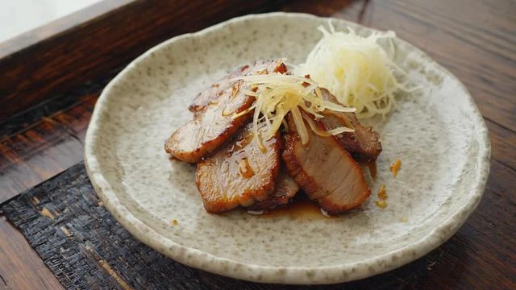
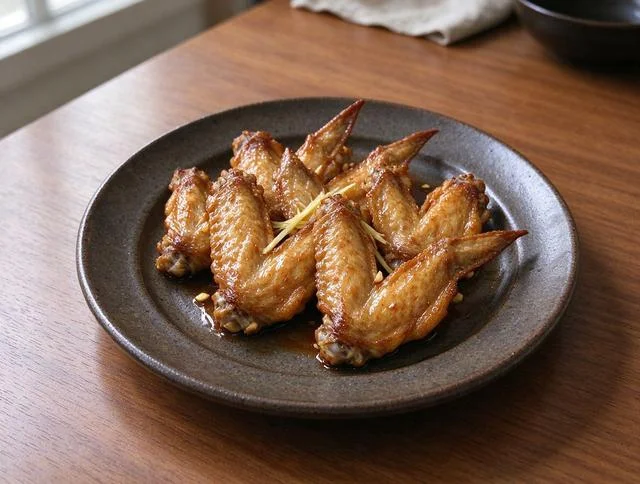
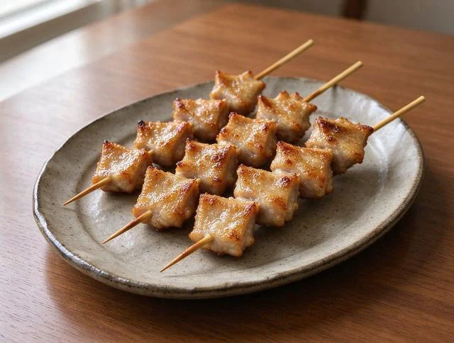
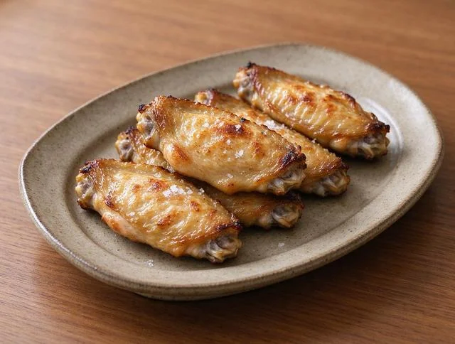
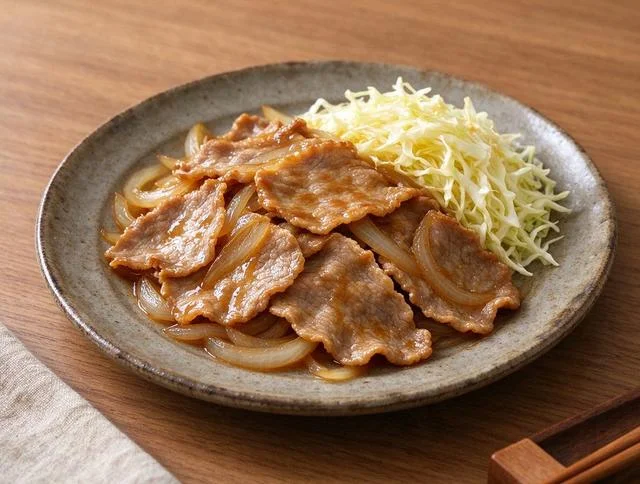
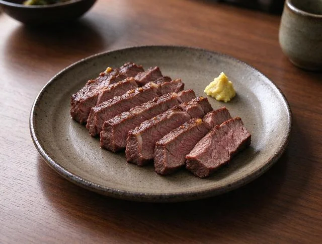

すべての目次料理
ちゃんと「いただく」方法
 炭火で焼くスペアリブのたれは、ここで塗る
炭火で焼くスペアリブのたれは、ここで塗る 鍋で煮込む牛すねを、スプーンでほどけるシチューに
鍋で煮込む牛すねを、スプーンでほどけるシチューに フライパンで焼く鶏ももの皮を、パリッと焼く
フライパンで焼く鶏ももの皮を、パリッと焼く
フライパンで炒める豚こまを香ばしい生姜焼きに 衣をつけて揚げる豚ロースのとんかつを切ってみる
衣をつけて揚げる豚ロースのとんかつを切ってみる 鍋で煮る豚こまが少し残ったら、ふたり分の豚汁に
鍋で煮る豚こまが少し残ったら、ふたり分の豚汁に台所の基本


写真から選ぶ、30皿のレシピ
焼く・串に刺す
 砂肝のにんにく焼き
砂肝のにんにく焼き
手羽先の塩焼き
鶏もものたれ焼き串 砂肝の塩串
砂肝の塩串
手羽先のしょうゆ照り焼き 厚切りポークのバター焼き
厚切りポークのバター焼き 豚肩ロースのみそ焼き
豚肩ロースのみそ焼き 豚肉のおろしだれ焼き
豚肉のおろしだれ焼き
豚のしょうが焼きと千切りキャベツ
牛ももステーキのからし添え 厚切り牛の黒こしょう焼き
厚切り牛の黒こしょう焼き にんにくチップのステーキ
にんにくチップのステーキ